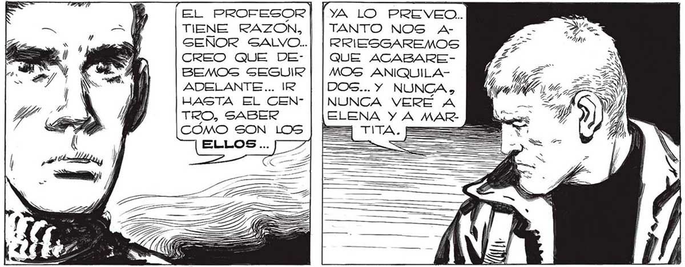
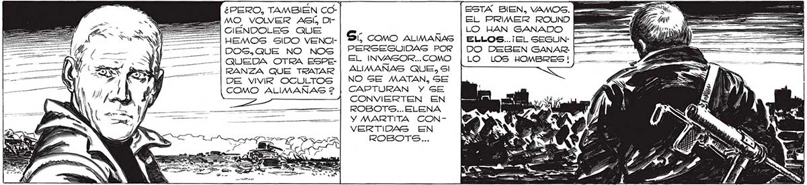

LA INFORMACION QUE OBTENGAMOS PUEDE RESULTAR DECISIVA, JUAN... ¡DE NOSOTROS DEPENDE QUIZA LA SUBSISTENCIA DEL PLANETA EL PROFESOR] [ya LO PREvVEO. . 249 TIENE RAZON, | [TANTO NOS A- : SEÑOR SALVO..| | RRIESGAREMOS CREO QUE DE- | | QuE ACABAREBEMOS SEGUIR | | MOS ANIQUILAADELANTE... IR DOS... Y NUNCA , HASTA EL CEN” | |NUNCA VERE A TRO, SABER MARCÓMO SOM LOS | == == ¿PERO, TAMBIEN COML MO VOLVER ASÍ, Di- EL PRIMER ROUND == CIENDOLES QUE G Ñ LO HAN GANADO HEMOS SIDO VENCI- l, COMO ALIMANAS | ELLOS... ¡EL SEGUNDOSG.QUE NO NOS PERSEGUIDAG POR | DO DEBEN GANAR: RANZA QUE TRATAR DE VIVIR OCULTOS COMO ALIMAÑAS 2 E -- DEL AMANECER NOS ESPOLEARON AÚN MAS. GALVAMOS LA Y MOLE DE ESCOMBROS QUE CERRABAN LA CALLE SANTA FE Y, TORCIENDO A LA DERECHA, TROTAMOS POR | | WI EL INVASOR... COMO ALIMANAS QUE, SI NO SE MATAN, SE CAPTURAN Y SE CONVIERTEN EN ROBOTS... ELENA Y MARTITA CONVERTIDAS EN mE l LO LOS HOMBRES! | Ml Estaca DesiERTA. Si NO FUERA POR AL [GÚN CAIDO, MUDO TESTIGO DE LA NEVA DA, UNO. ESPERARÍA... -..QUE DESPERTA: RA EN CUALQUIER MOMENTO. QUE EN CUALQUIER INSTANTE EMPEZARAN A HACER SE OÍR LOS Rui DOS FAMILIARES DE TODA CALLE QUE INICIA SU DÍA. PERO SA. AS PS Y Y no uuBOo ABATIMIENTO, INDECISIÓN BIAMOS QUE NO iS E a DESPERTARIA 1% : | NUNCA . EN NUESTROS MOVIMIENTOS. OTROS tra A A i COHETES QUE GURCARON POR EL AS, ASS CIELO_ GRIS... A A > UNA CALLE LATERAL. Hp IT

